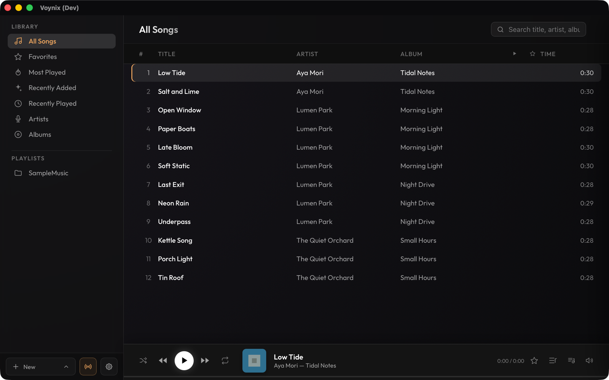
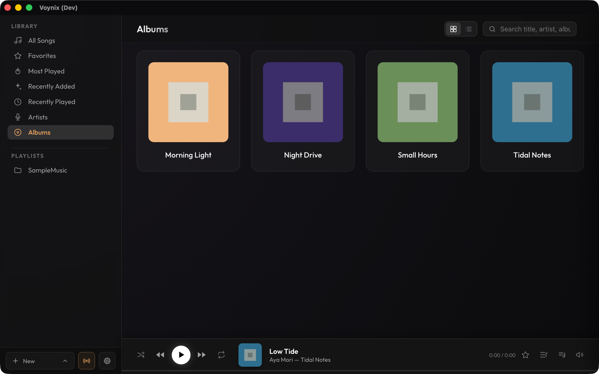
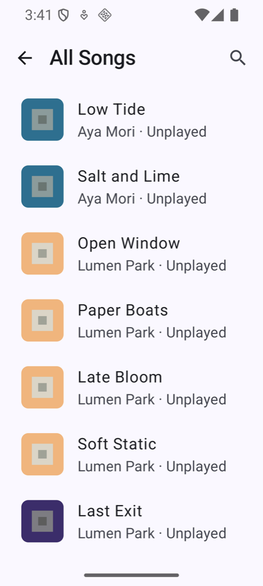
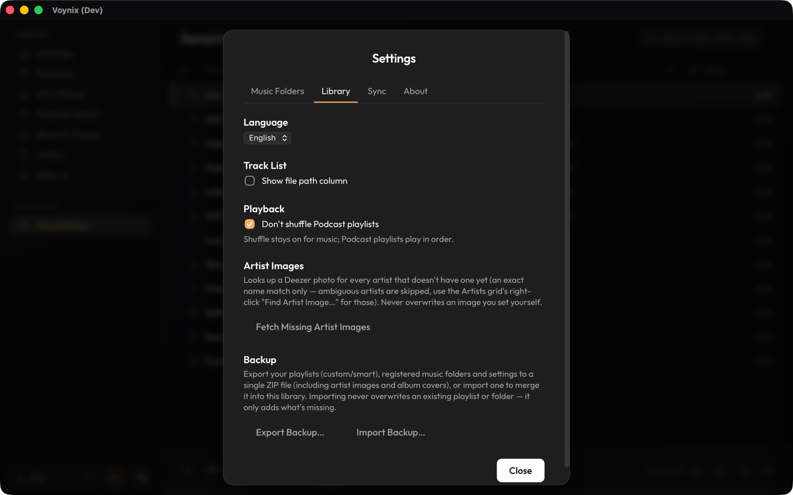

Voynix
Voynix
Voynix User Manual
Voynix is a local-first music player for Mac and Android.
Overview
- Syncs your Mac library to Android over Wi-Fi; play history and favorites sync back too
- Supports Android Auto
- Playback: scans local music files (mp3, m4a, flac) into a library of artists, albums and playlists. Gapless playback on both Mac and Android
- Playlists: regular playlists, plus smart playlists that collect tracks by genre, artist, play count, date added, favorites and more. Most Played, Recently Added and Recently Played are built in
- Editing track info: "Get Info…" edits titles and tags per track, album or artist. Artist images can be fetched automatically
- Podcasts: playback speed (0.8–2.0x), ±10-second skip, excluded from shuffle
- iTunes import: import playlists from an iTunes library XML
Requirements: macOS (the DMG is Apple Silicon only) and/or Android 8.0 (API 26) or later. Android Auto is optional. Sync needs both devices on the same Wi-Fi network.

Installation
Mac
Download the .dmg from Releases and drag the app to Applications.
With Homebrew (Apple Silicon), run brew install --cask tekapo/voynix/voynix. The warning below does not appear in that case, and brew upgrade --cask voynix updates the app.
xattr -cr /Applications/Voynix.app in Terminal and open the app again. This is needed only once.Android
Download voynix-<version>.apk from Releases and open it on the device. The first time, Android asks you to allow installing apps from your browser or file manager ("Install unknown apps").
To get updates automatically, use Obtainium: choose "Add App", enter https://github.com/tekapo/voynix, and install. Obtainium picks the .apk from each Release and notifies you of new versions.
The APK is not distributed through Google Play. On first launch, Android 13 and later ask for the notification permission.
Getting started
Adding music (Mac)
In the sidebar, choose ＋ New → Add Music Folder… and pick a folder; scanning starts right away. In Settings → Music Folders you can rescan (Rescan All) and import an iTunes library (Import iTunes Library…).
Library, playlists and podcasts
Browse by artist, album or playlist. Create playlists from the sidebar; smart playlists are created and edited on the Mac only and reach Android as regular playlists.
Podcasts
To treat tracks as podcasts, right-click a playlist or music folder in the sidebar and choose Kind → Podcast (other choices: Music, Other). Podcasts offer speed control (0.8–2.0x) and ±10-second skip, and are left out of shuffle. On Android, the "Don't shuffle podcasts" setting does the same for podcast playlists.

Android is a client that mirrors the Mac library, so add and manage music on the Mac.

Wi-Fi sync between Mac and Android
What gets synced
Only what you mark for sync is sent. In the Mac sidebar, right-click a playlist (or a Library item: All Songs, Favorites, Most Played, Recently Added or Recently Played) and choose "Sync to Device"; a sync mark appears next to it. Playlists are created on Android as they are on the Mac, and the tracks they contain are copied. If nothing is marked, Android receives no songs. Play history and favorites sync both ways.
Pairing
- On the Mac, click the sync button at the bottom left of the sidebar. The sync server starts automatically when Voynix launches (you can turn this off in Settings → Sync → "Start sync server automatically"; then start it from this window). A QR code, the server URL, the pairing code and a security code are shown.
- On Android, open Settings → Wi-Fi Sync and pair using one of the three methods below (QR code is the easiest).
- The marked tracks, playlists, play history and favorites are imported to Android. After that you can re-sync manually, and within Wi-Fi range it syncs automatically about every 6 hours. Auto sync can be turned off or limited to charging in the Android settings.
Tracks in formats Android can't play, such as ALAC, are converted on the Mac before being sent. Under Settings → Sync you can choose the target format (AAC, smaller but lossy, or FLAC, lossless but larger) and the AAC bitrate; changing it re-converts those files on the next sync.
| Method (on Android) | What you confirm |
|---|---|
| Scan QR code | Nothing. The QR code carries the server certificate's fingerprint, so the connection is pinned to your Mac right away. (Google's code scanner is used, so no camera permission is needed.) Anyone who can see the QR code can pair, so don't show the sync window to others. |
| Find Mac (automatic discovery) | A prompt appears on the Mac: check that its security code matches the one on the phone, then click Allow. Android then asks "Is this the right Mac?"; check the code again and tap "Matches — Pair". |
| Enter manually | Type the URL and the pairing code (the "Token" field on Android). Android then shows "Is this the right Mac?"; compare its security code with the one in the Mac's sync window and tap "Matches — Pair". There is no prompt on the Mac. |
Pairing again after "Unpair" works the same way; there is no shortcut for devices that were paired before.
Using the Android app
The Android app is a client that mirrors the Mac library. The home screen lists Library (Songs, Artists, Albums, Favorites, Most Played, Recently Added, Recently Played) and your synced Playlists; the top bar has search, a sync button and Settings.
- Settings → Wi-Fi Sync: pair or unpair, see the connection status, run Sync now, and set Auto-sync (about every 6 hours on the Mac's Wi-Fi) and Only while charging.
- Settings → Language: System, English or 日本語. Also here: "Don't shuffle podcasts", "Clear album art cache" (re-fetched on the next sync), the device ID and the version.
- User manual and Open source licenses are at the bottom of Settings.
Android Auto
Connected to a head unit, you can browse and play tracks, playlists and podcasts from the home screen, with shuffle/repeat and ±10-second podcast skip.
Because the app is installed outside Google Play, it won't appear in Android Auto's app list unless "Unknown sources" is enabled. This one-time setup is needed:
- Open the Android Auto app on the phone.
- Go to Settings and tap "Version" at the bottom about 10 times (a message says you're now a developer).
- Go back and open the menu (≡) at the top left; "Developer settings" has appeared.
- Developer settings → turn on "Unknown sources".
- Force-stop Android Auto (or restart the phone) and reconnect to the car.
"Voynix" should now appear in the list. For detailed troubleshooting see android-native/README.md.
Keyboard shortcuts (Mac)
| Key | Action |
|---|---|
| Space | Play / pause |
| ← / → | Previous / next track (±10 seconds while playing a podcast) |
| ⌘F | Focus the search field |
| Escape | Clear focus; close a dialog |
| ⌘S | Save, in dialogs that edit track, album or smart-playlist details |
The Dock right-click menu is also supported.
Backup and restore
On the Mac, Settings → Library → Export Backup… saves your playlists (regular and smart), registered music folders, settings, artist images and album covers to a single ZIP file, and Import Backup… merges one into the library. Importing never overwrites an existing playlist or folder; it only adds what is missing. Your music files are not included; keep them in your own backups.

Android backup is disabled on purpose so the pairing token is never restored on another device. After changing phones, install the app, pair again and sync.
FAQ and known limitations
Sync can't find my Mac.
Check that both devices are on the same Wi-Fi network (guest networks and some routers isolate devices from each other) and that the server is started on the Mac. If automatic discovery fails, scan the QR code or enter the URL and pairing code manually.
I synced, but no songs appeared on Android.
Only playlists and library items marked "Sync to Device" are sent. Right-click one in the Mac sidebar, choose "Sync to Device", then tap Sync now on Android.
My Mac's IP address changed and Android says it can't reach the Mac.
Automatic recovery can fail on some networks. Open the Wi-Fi sync window on the Mac and pair again by scanning the QR code.
How do I update the app?
Mac: download the new .dmg and replace the app in Applications, or run brew upgrade --cask voynix if you installed with Homebrew. Android: Obtainium updates it for you; otherwise install the new .apk over the old one. Your data is kept.
How do I uninstall the app?
Mac: drag Voynix from Applications to the Trash (or run brew uninstall --cask voynix if you installed with Homebrew; add --zap to remove the data as well). The data folder stays behind; delete ~/Library/Application Support/com.tekapo.voynix if you no longer need it. Your music files are never removed. Android: uninstall as usual; the data on the device is deleted with it.
Where is my data stored?
On the Mac, in ~/Library/Application Support/com.tekapo.voynix (library database and caches). Your music files stay where they are; Voynix only changes them when you save edited tags with "Get Info…". Deleting the app does not remove this folder.
macOS refuses to open the app.
(Installing with Homebrew avoids this warning.) Press "Done" in the warning (not "Move to Trash"), then click "Open Anyway" in System Settings → Privacy & Security, or run xattr -cr /Applications/Voynix.app in Terminal (see Installation).
Voynix doesn't show up in Android Auto.
Enable "Unknown sources" in Android Auto's developer settings (see Android Auto above).
Known limitations
- Songs cannot be added or scanned directly on Android.
- Smart playlists can only be created and edited on the Mac.
- The DMG is Apple Silicon (arm64) only.
- Android backup is disabled; pair again after changing phones.
Security and privacy
Voynix is local-first: your library stays on your devices, and the app has no accounts and no analytics. The sync server runs on your Mac only while Voynix is open (it starts automatically unless you turn that off in Settings → Sync), is reachable on your local network, and requires pairing: a QR code shown on your Mac's screen, a security-code check, or an approval you give on the Mac. Traffic is protected by a certificate whose fingerprint is pinned at pairing time. To report a vulnerability, see SECURITY.md.
More
- Releases
- Changelog
- Third-party notices
- Developer docs: DEVELOPMENT.md (Mac), android-native/README.md (Android)